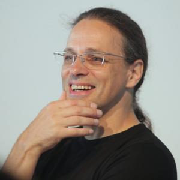

Pero antes, un poco de contexto...
Gerfried Stocker y "El arte del mañana"
¿Quién es Gerfried Stocker?
- Artista mediático y músico.
- Fundador de “X-space” en 1991, equipo para realizar proyectos interdisciplinarios.
- Director Artístico del Ars Electronica Festival desde el año 1995, y a partir del 2004 ha estado encargado del desarrollo de un programa para relaciones internacionales.
- Ha sido invitado para exponer en numerosos congresos internacionales, también es solicitado como consultor en el área de creatividad, gestión, e innovación de empresas.
Paper "El arte de mañana"
El arte de mañana es el arte electrónico, el arte como ensayo del futuro. ¿Qué factores o circunstancias determinarán el arte de mañana? ¿Cómo responderá el arte a las cuestiones sociales más importantes?
La tecnología es algo que está dentro de la normalidad, por lo que las nuevas dudas pasaron a ser si es que el arte digital seguirá teniendo este carácter de “vanguardia” sin transformarse en un elemento ordinario del día a día.
Las tecnologías digitales potencian la cooperación y competencia de ideas, capacidades y talentos por lo que de aquí nace un nuevo tipo de arte, caracterizado por la experiencia y experimentación.
En el paper se propone cambiar el enfoque de un festival, que este pueda abrir oportunidades a procesos artísticos o tecnológicos, poniendo el foco en el futuro:

Ars Electronica representa un acercamiento a lo que está pasando en el arte, la tecnología y la sociedad. Un festival, un museo del futuro, dedicado completamente al arte y la ciencia, acogiendo experimentos y obras en progreso. Se le dió una mayor importancia a este “museo del futuro” como lugar de producción y con el objetivo lograr que el arte sea un encuentro con el público y que estos puedan interactuar.
_
“Dreaming Beyond AI", Nushin Yazdani

Nushin Yazdani es una artista y ...